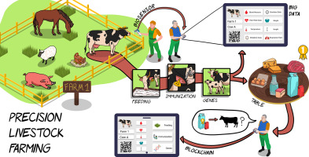
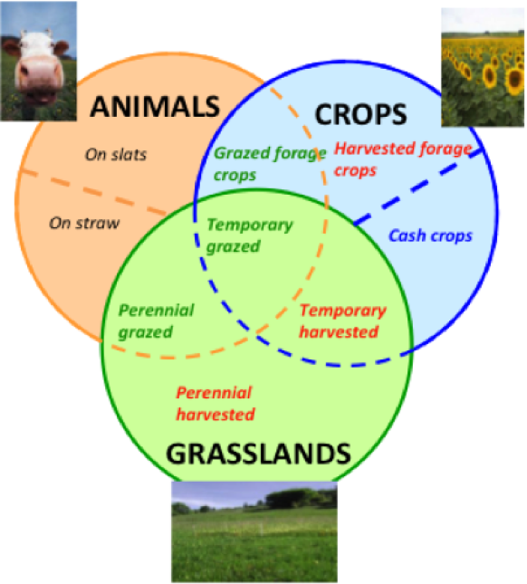
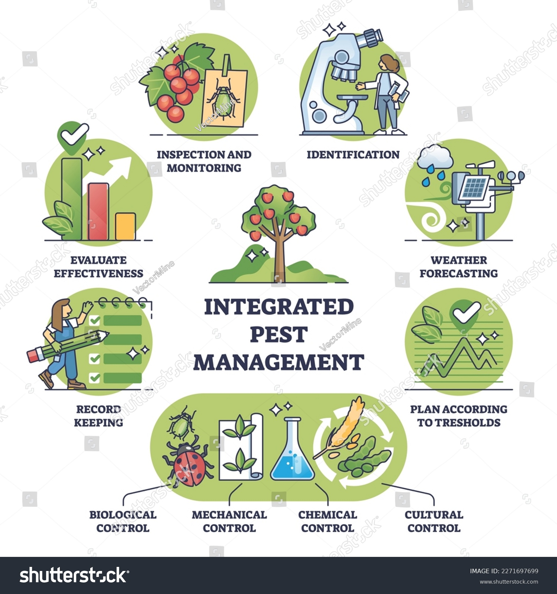
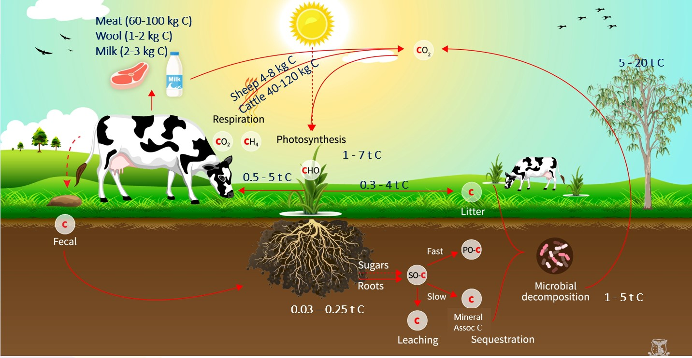

Animal integration refers to the practice of incorporating animals into various aspects of human activities, especially in agriculture, sustainability initiatives, and ecosystem management.Integrate animals into farms as a regenerative agriculture practice to improve soil health, sequester carbon dioxide, and reduce industrialized meat and dairy production. For centuries, the cultivation of crops was partnered with raising animals, generating food, income, clothing, and sources of power for farmers.
Key Aspects and Benefits of Animal Integration
Agriculture and Farming
- Livestock Grazing:Integrating livestock such as cows, sheep, or goats into agricultural fields for grazing can help manage vegetation, improve soil fertility, and reduce the need for mechanical interventions.
- Animal Manure:Animal waste, when properly managed, serves as valuable organic fertilizer, enhancing soil health and nutrient cycling in farming systems.
- Integrated Pest Management:Certain animals like chickens or ducks can be used in pest control by consuming insects and pests, reducing the reliance on chemical pesticides.
Permaculture and Agroecology
- Polyculture Systems:Integrating animals into polyculture systems, where diverse crops and animals coexist, promotes biodiversity, resilience, and sustainability in food production.
- Holistic Management:Practices like rotational grazing, where animals are moved through different pastures, mimic natural grazing patterns and improve soil health while supporting animal welfare.
Sustainable Land Management
- Erosion Control:Animals like grazing animals or land-based birds can help manage vegetation and control erosion in sensitive areas, preventing soil degradation.
- Biodiversity Enhancement:Integrating animals into ecosystems contributes to biodiversity conservation by maintaining habitat diversity and supporting wildlife corridors.
Regenerative Agriculture
- Carbon Sequestration:Properly managed grazing systems can enhance carbon sequestration in soils, contributing to climate change mitigation efforts.
- Water Management:Animal integration practices can improve water infiltration, reduce runoff, and enhance water retention in soils, supporting water management in agricultural landscapes.




Benefits of Animal Integration
- Resource Efficiency:Utilizing animals in farming and land management reduces the need for external inputs like synthetic fertilizers, herbicides, and pesticides, leading to cost savings and resource conservation.
- Nutrient Cycling:Animals play a crucial role in nutrient cycling by converting organic matter into valuable nutrients for plants, improving soil fertility and productivity.
- Ecosystem Services:Integrating animals supports ecosystem services such as pollination, pest control, soil aeration, and biodiversity conservation.
- Holistic Approach:Animal integration promotes a holistic approach to agriculture and land management, considering ecological, social, and economic aspects for sustainable practices.
By integrating animals thoughtfully and responsibly into human activities, we can enhance ecosystem resilience, promote sustainable agriculture, and contribute to overall environmental health and well-being.